Что это делает
Одно приложение на телефоне, один демон-шлюз на вашем рабочем столе
Система и слои
Живая статистика ЦП/памяти/температуры и переключение слоёв AUFS прямо с рабочего стола.
Сеть и Wi-Fi
Интерфейсы, адреса, сканирование и подключение Wi-Fi — включая обнаружение узлов Tailscale для автоматического поиска вашего шлюза.
Bluetooth
Питание, режим обнаружения/сопряжения, сканирование, сопряжение, подключение, доверие, удаление — полный контроль над адаптером.
Брандмауэр
Просматривайте и редактируйте правила и цепочки iptables, применяйте пресеты с вашего телефона.
Аудио
Громкость, mute, список sink — и трансляция аудиовыхода рабочего стола на динамик вашего телефона через WebRTC.
Медиа
Настоящие play/pause/seek/volume для Chameleon Media Center и плееров на базе MPV, через собственный IPC-сокет mpv — а не просто статический список файлов.
CMC Live
Смотрите Chameleon Media Centerпрямой эфир на вашем телефоне — выберите Low latency (MPEG-TS) или Smooth (HLS) для слабых соединений — узнайте, идёт ли эфир, его источник и сколько зрителей, и скопируйте ссылку, чтобы любой мог смотреть в браузере.
Windows и рабочие столы
Список, фокус, закрытие, сворачивание, разворачивание, мозаика окон и переключение виртуальных рабочих столов.
Удалённый рабочий стол
Полный обмен экраном через WebRTC с управлением касанием-как-мышью и вводом с клавиатуры — смотрите и управляйте рабочим столом откуда угодно в вашей сети. Полностью функционально: касания, перетаскивания и нажатия клавиш, которые вы отправляете, появляются на рабочем столе почти мгновенно. Любая заметная задержка — в обновлениях экрана, идущих от рабочего стола к вашему телефону, а не в вашем вводе.
Общий буфер обмена
ПК — это хаб: каждый телефон отправляет свой буфер обмена туда — прямо в собственный буфер обмена ПК, готовый к вставке — а экран Clipboard перечисляет последнюю запись каждого устройства. Нажмите на одну, чтобы скопировать её на этот телефон. В фоновом режиме ничего не читается и не записывается в буфер обмена вашего телефона, только когда вы нажимаете.
Терминал
Настоящая оболочка, запускаемая с вашего телефона.
AI-чат
Общайтесь с любым AI-провайдером, настроенным на шлюзе — DeepSeek, OpenAI, Anthropic и другими.
Рутованные телефоны
Два дополнительных экрана появляются автоматически, когда на телефоне есть root (Magisk)
VPN для точки доступа
Поделитесь выходным узлом Tailscale телефона со всеми устройствами в его Wi-Fi точке доступа — ноутбуки, телевизоры и консоли получают VPN без установки чего-либо. Маршрутизация восстанавливается автоматически при перезапуске точки доступа или Tailscale, а загрузочный скрипт может вернуть всё после перезагрузки. Создано для телефона, оставленного подключённым в качестве роутера: ограничение заряда, исключение Tailscale из оптимизации батареи и Always-on VPN.
USB-накопитель
Подключите телефон к любому ПК, и он появится как USB-диск. Создайте образ диска до 256 ГБ за секунды — FAT32 (читается любой ОС), ext4 (без ограничения файлов в 4 ГБ) или загрузочный GPT-диск с разделом EFI, чтобы ноутбук мог загрузиться с телефона — затем поделитесь им для чтения-записи или только для чтения, либо откройте его на самом телефоне. Вы также можете передать ПК SD-карту телефона или USB-накопитель. ADB остаётся подключённым во время обмена.
Шлюз
trixie-gateway — сторона рабочего стола, единый самодостаточный бинарный файл
Один бинарный файл, Python не нужен
Скачайте единый самодостаточный исполняемый файл — без Python, pip или venv на машине. Построен на aiohttp + aiortc, а исходный код по-прежнему на GitHub, если вы предпочитаете запускать из Python. Работает автономно или как служба systemd, прослушивая ваш адрес Tailscale/LAN.
~120 REST-эндпоинтов
Все функции телефонного приложения выше, плюс совместимый с OpenAI /v1/chat/completions который маршрутизирует к любому настроенному вами AI-провайдеру.
MCP-сервер включён
media_mcp_server.py предоставляет управление медиа (статус, воспроизведение, пауза, перемотка, громкость, открытие, просмотр) как инструменты MCP через stdio JSON-RPC — те же данные сессии и путь управления, что использует телефонное приложение, поэтому AI-агент и ваш телефон всегда видят одно и то же.
Совместимость
Создано для Debian Trixie — честно о том, где ещё это работает
| Платформа | Статус | Почему |
|---|---|---|
| Дебиан Трикси | ✓ Разработано и протестировано здесь | — |
| Семейство Fatdog64 / Puppy Linux | ✓ Должно работать | Функция Layers автоматически определяет ветки union-fs под /aufs (производный от Fatdog64, включая эту машину) или /initrd (стандартный Puppy) — /initrd путь не проверен на реальной установке Puppy, основан на документированных соглашениях, а не на практической проверке |
| Другие рабочие столы X11 Linux | ✓ Должно работать | Требуются BlueZ, iptables, PulseAudio/PipeWire с совместимостью pactl и сеанс X11 (рабочие столы только с Wayland не поддерживаются — wmctrl/xdotool требуется X11) |
| Windows 11 | 🧪 Экспериментальная тестовая сборка | Демонстрация экрана, мышь/клавиатура, список окон, громкость и терминал реализованы для Windows. Бинарный файл собирается и запускается в автоматизированном CI, но ещё не запускался на реальной машине с Windows — ожидайте шероховатостей. Bluetooth, брандмауэр, слои, яркость, сеть и Media Center остаются только для Linux и отвечают 501 |
| macOS (Intel и Apple Silicon) | 🧪 Экспериментальная тестовая сборка | Тот же набор функций, что и в Windows, с использованием Quartz, AVFoundation и osascript. Собирается и запускается в CI для обеих архитектур, но не тестировался на реальных Mac. Приложение не подписано, и macOS запросит разрешения на запись экрана и универсальный доступ |
Скриншоты
TrXi-Ctrl — захвачено вживую, работает на реальном оборудовании
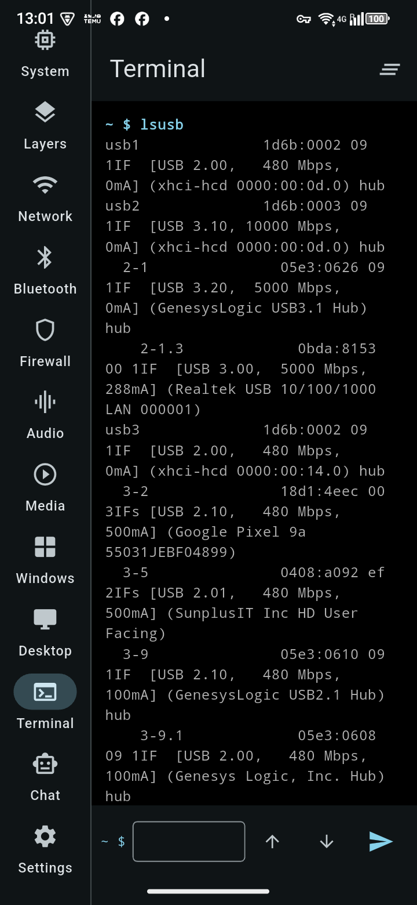
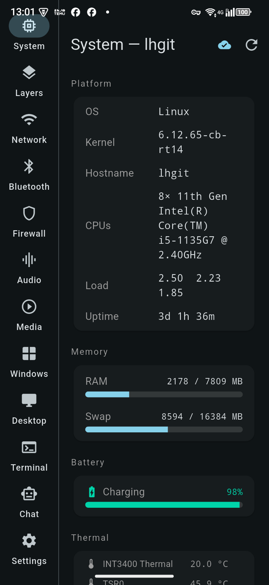
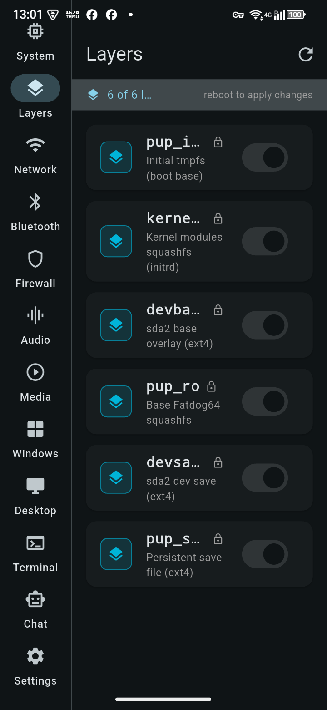
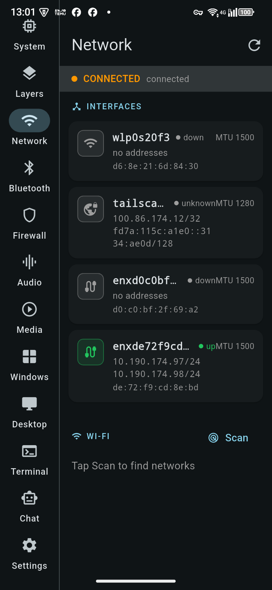
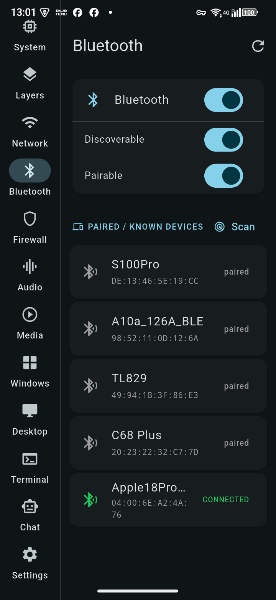
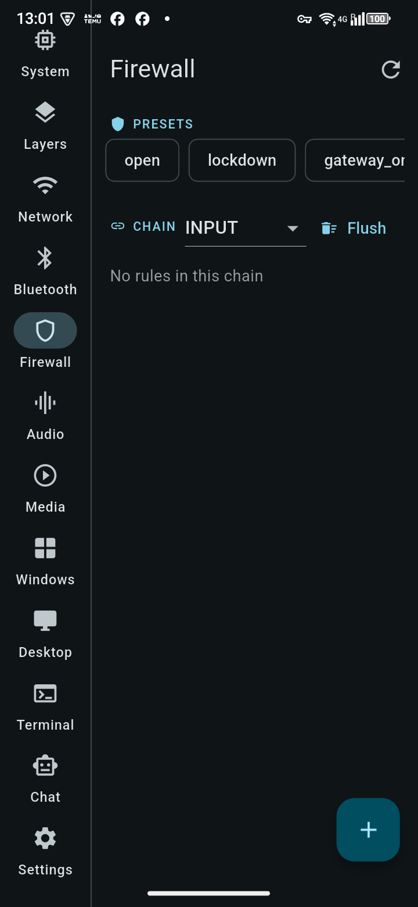
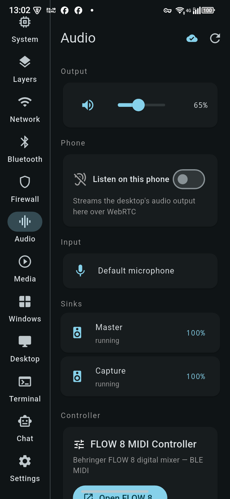
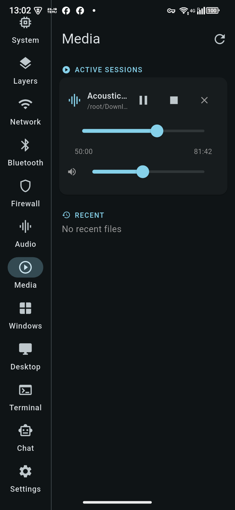
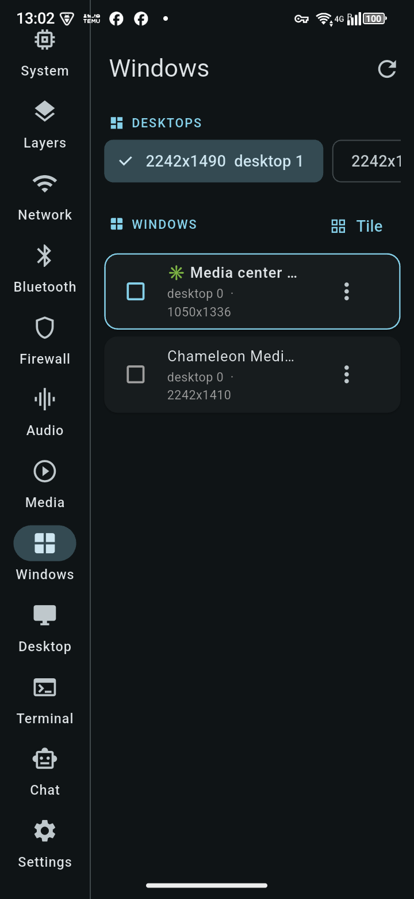
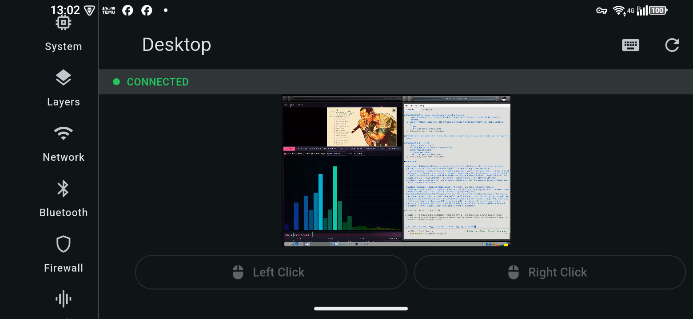
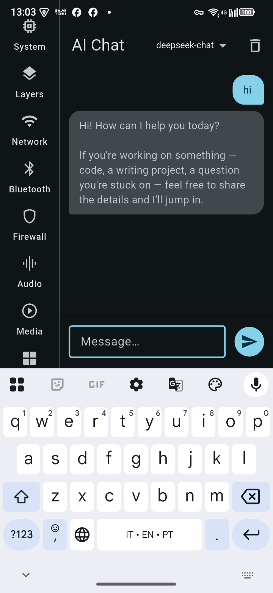
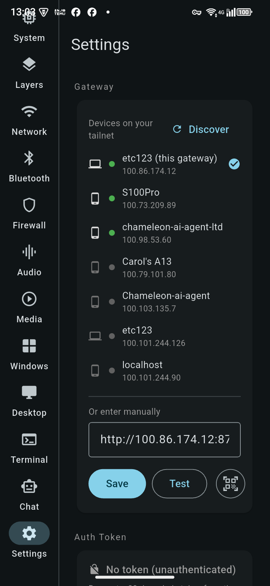
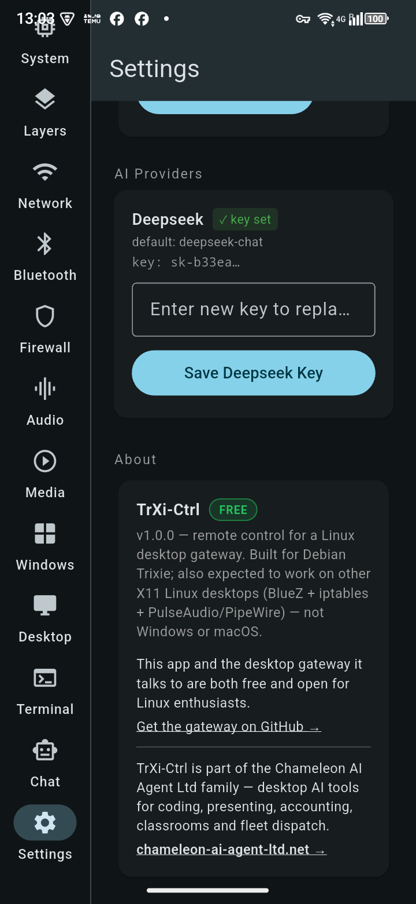
Скачать БЕСПЛАТНО
Мобильное приложение (Android) + шлюз для ПК. Оба открыты, оба бесплатны.
⬇ Скачать APK ⬇ Шлюз для Linux Тестовые сборки для Windows и macOS 🧪 Посмотреть шлюз на GitHub →Установите шлюз
На машине с Debian Trixie (или совместимым Linux), которой вы хотите управлять
Предпочитаете Python? git clone https://github.com/cou645/trixie-gateway.git, затем pip install -r requirements.txt и python3 gateway.py --port 8772. Полная документация по установке, включая запуск в качестве службы systemd, находится в разделе репозитория README.md.
🧪 Тестовые сборки для Windows и macOS находятся на страница релизов (trixie-gateway-windows-x86_64.exe, trixie-gateway-macos-arm64.zip, trixie-gateway-macos-x86_64.zip). Они не подписаны, поэтому Windows SmartScreen скажет "неизвестный издатель" (Подробнее → Выполнить в любом случае), а macOS заблокирует первый запуск (правый клик → Открыть). Пожалуйста, сообщите, что не работает.
Нравится TrXi-Ctrl? Посмотрите, что ещё мы создаём
TrXi-Ctrl — это бесплатная, открытая часть большого семейства настольных ИИ-инструментов — редактор кода, студия презентаций, бухгалтерия для Великобритании, диспетчеризация автопарка и многое другое.
Посмотреть все приложения Chameleon AI → Chameleon Companion (ИИ для телефона и компьютера) →